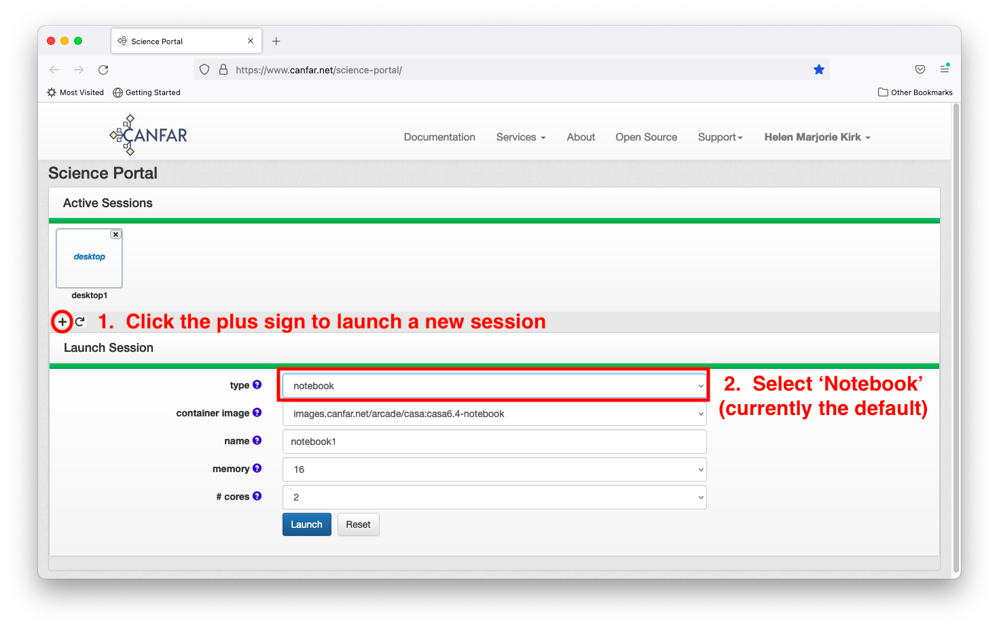
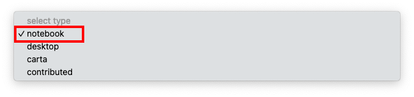
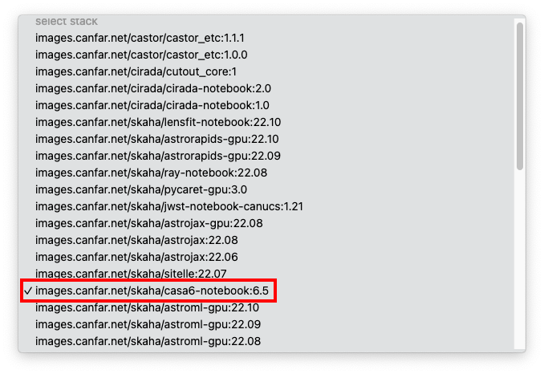
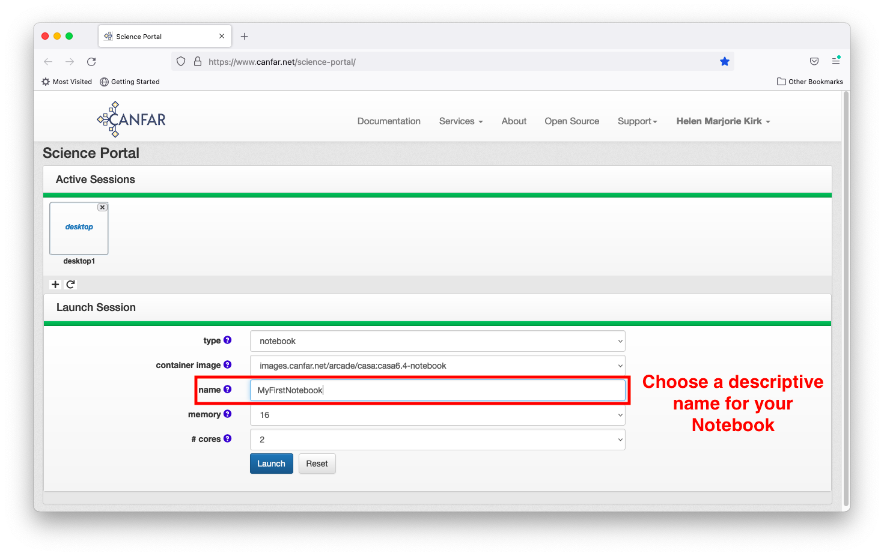
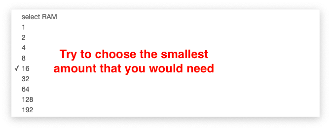
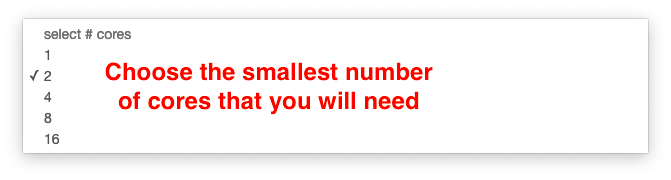
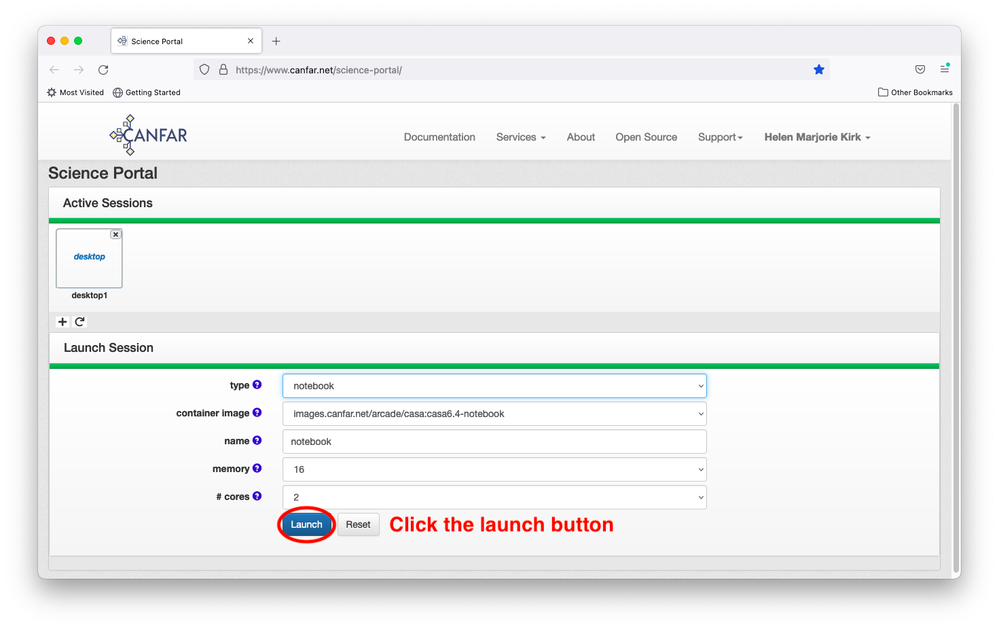
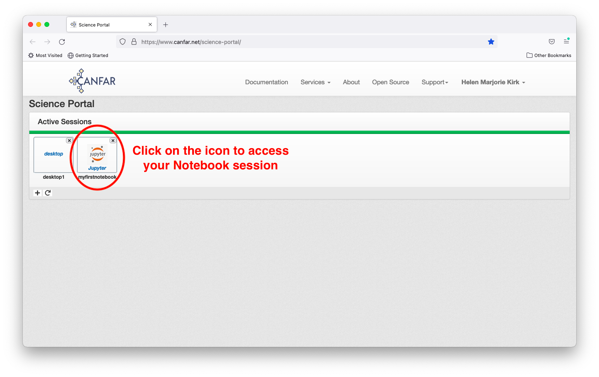
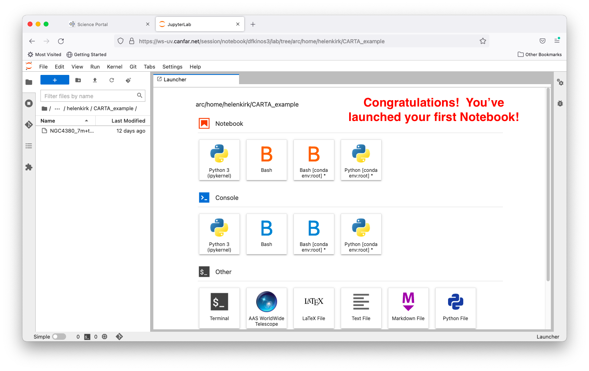
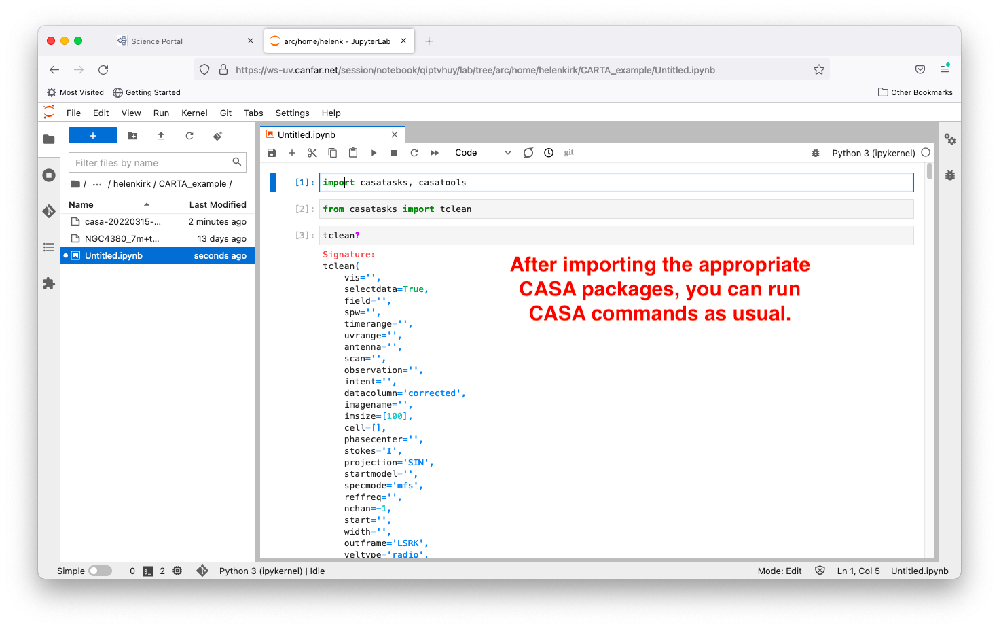

Launching Jupyter Notebook Sessions¶
Interactive Jupyter Lab sessions provide a powerful environment for data analysis, visualization, and computational astronomy. This guide walks you through launching and using notebook sessions on the CANFAR Science Platform.
🎯 What You'll Learn
- How to launch a Jupyter notebook session on CANFAR
- How to choose the right container and resources
- How storage works inside notebooks and what persists
- Tips for performance, collaboration, and troubleshooting
Overview¶
Jupyter notebooks combine code execution, rich text documentation, and inline visualizations in a single interface. CANFAR's notebook sessions include:
- Jupyter Lab: Full-featured development environment
- Pre-configured containers: Astronomy-specific software stacks
- Persistent storage: Access to your ARC and VOSpace data
- Collaborative sharing: Share sessions with team members
Creating a New Session¶
Step 1: Access Session Creation¶
From the Science Portal dashboard, click the plus sign (+) to create a new session, then select notebook as your session type.


Step 2: Choose Your Container¶
Select a container image that includes the software you need. Each container comes pre-configured with specific tools and libraries:
- astroml (recommended): Modern Python astronomy libraries (AstroPy, NumPy, SciPy, Matplotlib)
- CASA 6.5-notebook: Includes CASA (Common Astronomy Software Applications) for radio astronomy
- General purpose: Standard Python data science stack

Container Selection
Start with astroml for most astronomy workflows. It includes the latest astronomy libraries and is actively maintained. Use CASA containers only when you specifically need CASA functionality.
Step 3: Configure Session Resources¶
Session Name¶
Choose a descriptive name that helps you identify this session later (e.g., "galaxy-photometry", "pulsar-analysis").

Memory (RAM) Selection¶
Select the maximum memory your analysis will require. Start conservatively—you can always launch a new session with more memory if needed.
- 8GB: Light data analysis, small datasets
- 16GB (default): Suitable for most analyses, equivalent to a MacBook Pro
- 32GB+: Large datasets, memory-intensive computations
Resource sharing: Computing resources are shared among all users. Large memory requests may delay session startup if resources are unavailable.

CPU Cores¶
Choose the number of processing cores based on your computational needs:
- 1 core: Simple analysis, single-threaded code
- 2 cores (default): Recommended for most tasks
- 4+ cores: Parallel processing, intensive computations
Most astronomy software uses only one core unless specifically configured for parallel processing.

Step 4: Launch Your Session¶
Click the Launch button to create your Notebook session. The system will:
- Allocate computing resources
- Pull the container image (if not cached)
- Initialize your environment
- Start Jupyter Lab
First Launch Timing
The first launch of a specific container may take 2-3 minutes while the image is downloaded and cached. Subsequent launches are typically 30-60 seconds.

Step 5: Connect to Your Session¶
Wait for the Notebook icon to appear on your dashboard, then click it to access your session. Initial startup may take 2-3 minutes if the container hasn't been used recently on this server.

Working in Jupyter Lab¶
Available Interfaces¶
- Python 3 (ipykernel): Standard Python with astronomy libraries
- Terminal: Command-line access for advanced operations
- File Browser: Navigate your
/arcstorage directories

Storage Access¶
Your notebook session automatically mounts:
/arc/projects/[group]/: Shared project storage/arc/home/[username]/: Personal storage/tmp/: Temporary space (cleared when session ends)
Save to Persistent Storage
Files in /tmp/ do not persist when the session ends. Save important work to /arc/projects/ or /arc/home/. For heavy I/O, use /scratch/ if available and copy results to /arc when done.
Example: Astronomy Analysis¶
Here's a simple example using AstroPy to work with FITS data:
import numpy as np
import matplotlib.pyplot as plt
from astropy.io import fits
from astropy.wcs import WCS
# Load a FITS file
hdul = fits.open("/arc/projects/myproject/data/image.fits")
data = hdul[0].data
header = hdul[0].header
# Display the image
plt.figure(figsize=(10, 8))
plt.imshow(data, origin="lower", cmap="viridis")
plt.colorbar(label="Flux")
plt.title("Astronomical Image")
plt.show()
Using CASA in Jupyter¶
If you're using a CASA container, you can run CASA commands directly in Python notebooks:

# CASA example
import casa_tools as tools
import casa_tasks as tasks
# Create measurement set summary
tasks.listobs(vis="/arc/projects/myproject/data/observation.ms")
# Image the data
tasks.tclean(
vis="/arc/projects/myproject/data/observation.ms",
imagename="my_image",
imsize=1024,
cell="0.1arcsec",
)
Session Management¶
Sharing Sessions¶
Share your session with collaborators:
- Click the session menu in Jupyter Lab
- Select "Share Session"
- Add collaborator usernames
- Set permissions (read-only or read-write)
Saving Your Work¶
- Auto-save: Notebooks auto-save every 2 minutes
- Manual save: Use Ctrl+S or File → Save
- Version control: Consider using Git for code versioning
Ending Sessions¶
Always properly shut down your session to free resources:
- Save all work
- Close Jupyter Lab tab
- Return to Science Portal
- Click the session icon and select "Delete"
Best Practices¶
Resource Usage¶
- Start small: Begin with minimal resources and scale up if needed
- Monitor usage: Use the terminal to check memory with
htoporfree -h - Clean up: Remove large temporary files when finished
Data Management¶
- Organize files: Create clear directory structures in your
/arcspace - Document work: Use markdown cells to explain your analysis
- Backup results: Important results should be saved to persistent storage
Collaboration¶
- Share sessions: Real-time collaboration for debugging and teaching
- Version control: Use Git for code sharing and version management
- Documentation: Well-documented notebooks help collaborators understand your work
Troubleshooting¶
Common Issues¶
Session won't start - Check resource availability - Try reducing memory/CPU requirements - Contact support if persistent
Can't access files
- Verify file paths in /arc/projects/[group]/
- Check group permissions
- Ensure files were uploaded correctly
Notebook kernel crashes - Often due to memory overuse - Restart kernel and reduce data size - Consider using more memory
Performance issues
- Check if other users are sharing resources
- Use htop to monitor system usage
- Consider running during off-peak hours
Getting Help¶
- Documentation: Storage Guide | Container Guide
- Support: Email support@canfar.net
- Community: Join our Discord community for peer support
Next Steps¶
- Batch Jobs: Scale up to non-interactive processing
- CARTA Sessions: Specialized image visualization
- Desktop Sessions: Full graphical desktop environment
- Radio Astronomy Guide: Learn common astronomy workflows with CANFAR
Created: 2025-09-17